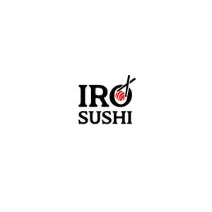

Trade Mark Journal No.2026/010 6 March 2026
UK00004304076 2 December 2025 (29,30,35,39,43)

- Class 29
- Meat, fish, poultry, game; meat extracts; sushi related products - namely anchovy fillets, beef, chicken, chop suey, chowder, cods, fish, fish balls, fish crackers, fish eggs for human consumption, fish fillets, fish fingers, fish spawn (processed -), fish sticks, fish stock, tinned fish, French fries, hamburgers, herrings, hotdog sausages, not live lobsters, not live octopuses, onion rings, not live oysters, prepared fruits, roast beef, salmon, salted fish, sardines, not live sea basses, red snappers non-live sea breams, sea food, seaweed extracts for food, non-live shellfish, smoked fish, smoked salmon, soya milk, spiny lobsters, steaks of fish, sturgeon eggs, tuna fish, vegetable burgers; raw and cooked fish and fish products for food; seaweed extracts for food; fish and food products made from fish; meat and food products made from meat; crustaceans; shellfish; mollusca; caviar; soups; miso soups; soup preparations; preserved, dried, and cooked fruits and vegetables; dates; jellies, jams, compotes; eggs and food products made from eggs; milk and milk products; yoghurt; cheese, including Indian (ethnic) cheeses known as paneer, mava and khoa; edible oils and fats; roasted peanuts; peanut butter; peanuts, nuts, kernels, legumes, drupes, pods, all being prepared or processed; edible nuts and seeds, including those prepared as snack foods; mixtures of fruit and nuts; salted meats; salted fish; salted nuts; chocolate nut butter; crystallised, frosted and frozen fruit; cooked, baked, dried, preserved, processed and stuffed potatoes; snack foods; snack food products; pickles; beverages based predominantly on dairy products or yoghurt; flavoured milk drinks; cooked meals consisting principally of meat, fish, poultry, game or vegetables; ready-prepared meals; ready-prepared desserts; snack foods containing vegetables; edible seaweed and food products made from seaweed; spread made from nuts, kernels, legumes, drupes, pods or peanuts; beverages containing soya; miso soup; edamame; sashimi; ikura.
- Class 30
- Instant noodles; coffee; tea; Japanese green tea; sushi; sushi related products -namely sushi, nigiri, California rolls, ramen, udon soup, gyoza, rice, yakisoba, maki, kaisu, kimchi chicken, seaweed, katsu, teriyaki, Japanese hand rolls, iso, dorayaki, mochi, green tea, soy sauce, chilli crackers, uncooked Chinese noodles, uncooked Chinese rice noodles, chow mein, chow mein noodles, dumplings, fish dumplings, fructose syrup for use in the manufacture of foods, ginger, ginseng tea, hamburger sandwiches, hamburgers being cooked and contained in a bread rolls and bread buns, Korean soy sauce, Korean traditional rice cake, Korean traditional sweets and cookies, mustard vinegar, noodle-based prepared meals, noodles, pickled ginger, rice, rice based dishes, rice dumplings dressed with sweet bean jam, rice mixed with vegetables and beef, sesame seeds, shrimp dumplings, shrimp noodles, spring rolls, teas, teriyaki sauce, udon, udon noodles; Udon; Okonomiyaki [Japanese savoury pancakes]; ramen [Japanese noodle-based dish]; cocoa and artificial coffee; rice; tapioca and sago; spices; vinegar; sauces; chilli sauce; chilli pepper; chilli seasonings; curried food pastes; hot sauce; horseradish sauce; soy sauce; teriyaki sauce; sweet and sour sauce; spicy sauces; wasabi sauce; bakery goods; dried coriander for use as seasoning; noodles; rice noodles; noodles with soup; vermicelli; wontons; pies; meat pies; ginseng tea; green tea; herbal tea; bread, pastries and confectionery; dough; doughnuts; novelty doughnuts; doughnut mixes; instant doughnut mixes; flour for doughnuts; doughnut cones; doughnut ice creams; bakery goods; mixes for making bakery products; preparations for making bakery products; flour; sweet glazes and fillings; chocolate based fillings; custard based fillings; sweets; candy; cookies; biscuits; cakes; pies; muffins; bagels; chocolate; puddings; ice cream, sorbets and other edible ices; ice cream sandwiches; ice cream cones; frostings; frosting mixes; icings; topping syrups; chocolate toppings; sugar, honey, treacle; yeast; baking powder; salt; seasonings; spices; preserved herbs; vinegar; sauces and other condiments; coffee, tea, cocoa and artificial coffee; rice, pasta and noodles; tapioca and sago; flour and preparations made from cereals.
- Class 35
- Advertising; advertising via the internet; electronic billboard advertising; magazine advertising; advertising services; advertising services in relation to restaurants; advertising services in relation to food and drink; advertising services in relation to sushi and Japanese food; marketing services; marketing services in the field of restaurants; promotional services; promotional marketing; event marketing; digital marketing; production of advertising matter; arranging and conducting of promotional events; arranging and conducting of promotional events in the field of restaurant services; franchising; business management, organisation and administration; business management relating to restaurant franchising; advisory services relating to the running of restaurants; advertising, marketing and promotional consultancy, advisory and assistance services; advertising, marketing and promotional consultancy, advisory and assistance services in the field of restaurant services; product demonstrations and product display services; compilation, production and dissemination of advertising matter; distribution of advertising, marketing and promotional material; online ordering services; online ordering services in relation to food and drink; import and export services in relation to food and drink; wholesale services in relation to food and drink; retail and online retail services in relation to meat, fish, poultry, game, meat extracts, sushi related products - namely anchovy fillets, beef, chicken, chop suey, chowder, cods, fish, fish balls, fish crackers, fish eggs for human consumption, fish fillets, fish fingers, fish spawn (processed -), fish sticks, fish stock, tinned fish, French fries, hamburgers, herrings, hotdog sausages, not live lobsters, not live octopuses, onion rings, not live oysters, prepared fruits, roast beef, salmon, salted fish, sardines, not live sea basses, red snappers non-live sea breams, sea food, seaweed extracts for food, non-live shellfish, smoked fish, smoked salmon, soya milk, spiny lobsters, steaks of fish, sturgeon eggs, tuna fish, vegetable burgers, raw and cooked fish and fish products for food, seaweed extracts for food, fish and food products made from fish, meat and food products made from meat, crustaceans, shellfish, mollusca, caviar, soups, miso soups, soup preparations, preserved, dried, and cooked fruits and vegetables, dates, jellies, jams, compotes, eggs and food products made from eggs, milk and milk products, yoghurt, cheese, including Indian (ethnic) cheeses known as paneer, mava and khoa, edible oils and fats, roasted peanuts, peanut butter, peanuts, nuts, kernels, legumes, drupes, pods, all being prepared or processed, edible nuts and seeds, including those prepared as snack foods, mixtures of fruit and nuts, salted meats, salted fish, salted nuts, chocolate nut butter, crystallised, frosted and frozen fruit, cooked, baked, dried, preserved, processed and stuffed potatoes, snack foods, snack food products, pickles, indian (ethnic) savouries and snacks, beverages based predominantly on dairy products or yoghurt, flavoured milk drinks, cooked meals in this class, ready-prepared meals, ready-prepared desserts, snack foods containing vegetables, edible seaweed and food products made from seaweed, spread made from nuts, kernels, legumes, drupes, pods or peanuts, beverages containing soya, instant noodles, coffee, tea, Japanese green tea, sushi, sushi related products -namely sushi, Japanese food, nigiri, sashimi, California rolls, miso soup, ramen, udon soup, gyoza, rice, yakisoba, maki, edamame, kaisu, kimchi chicken, seaweed, katsu, teriyaki, bento boxes, ikura, Japanese hand rolls, iso, dorayaki, mochi, green tea, soy sauce, chilli crackers, uncooked Chinese noodles, uncooked Chinese rice noodles, chow mein, chow mein noodles, dumplings, fish dumplings, fructose syrup for use in the manufacture of foods, ginger, ginseng tea, hamburger sandwiches, hamburgers being cooked and contained in a bread rolls and bread buns, Korean soy sauce, Korean traditional rice cake, Korean traditional sweets and cookies, mustard vinegar, noodle-based prepared meals, noodles, pickled ginger, rice, rice based dishes, rice dumplings dressed with sweet bean jam, rice mixed with vegetables and beef, sesame seeds, shrimp dumplings, shrimp noodles, spring rolls, teas, teriyaki sauce, udon, udon noodles, Udon, Okonomiyaki [Japanese savoury pancakes], ramen [Japanese noodle-based dish], cocoa and artificial coffee, rice, tapioca and sago, spices, vinegar, sauces, chilli sauce, chilli pepper, chilli seasonings, curried food pastes, hot sauce, horseradish sauce, soy sauce, teriyaki sauce, sweet and sour sauce, spicy sauces, wasabi sauce, bakery goods, dried coriander for use as seasoning, noodles, rice noodles, noodles with soup, vermicelli, wontons, pies, meat pies, ginseng tea, green tea, herbal tea, bread, pastries and confectionery, dough, doughnuts, novelty doughnuts, doughnut mixes, instant doughnut mixes, flour for doughnuts, doughnut cones, doughnut ice creams, bakery goods, mixes for making bakery products, preparations for making bakery products, flour, sweet glazes and fillings, chocolate based fillings, custard based fillings, sweets, candy, cookies, biscuits, cakes, pies, muffins, bagels, chocolate, puddings, ice cream, sorbets and other edible ices, ice cream sandwiches, ice cream cones, frostings, frosting mixes, icings, topping syrups, chocolate toppings, sugar, honey, treacle, yeast, baking powder, salt, seasonings, spices, preserved herbs, vinegar, sauces and other condiments, coffee, tea, cocoa and artificial coffee, rice, pasta and noodles, tapioca and sago, flour and preparations made from cereals.
- Class 39
- Transport; Packaging and storage of goods; Travel arrangement; food delivery services; transportation of food; packaging of food; storage of food.
- Class 43
- Services for providing food and drink; provision of food and drink in restaurants; catering for the provision of food and drink; hotels; pubs; bars; restaurant, bar and cocktail lounge services; café; sushi bars; wine bars; wine bar services; wine tasting services (provision of beverages); cocktail bars; catering for the provision of food and beverages; preparation of food and drink; services for the preparation of food and drink; provision of information relating to the preparation of food and drink; temporary accommodation; restaurant services; restaurant information services; restaurant reservation services; carvery restaurant services; mobile restaurant services; fast food restaurant services; self-service restaurant services; restaurant services incorporating licensed bar facilities; restaurant services for the provision of fast food; takeaway services; take-out restaurant services.
Chhong Norbu Sherpa
Representative: Trade Mark Wizards Limited